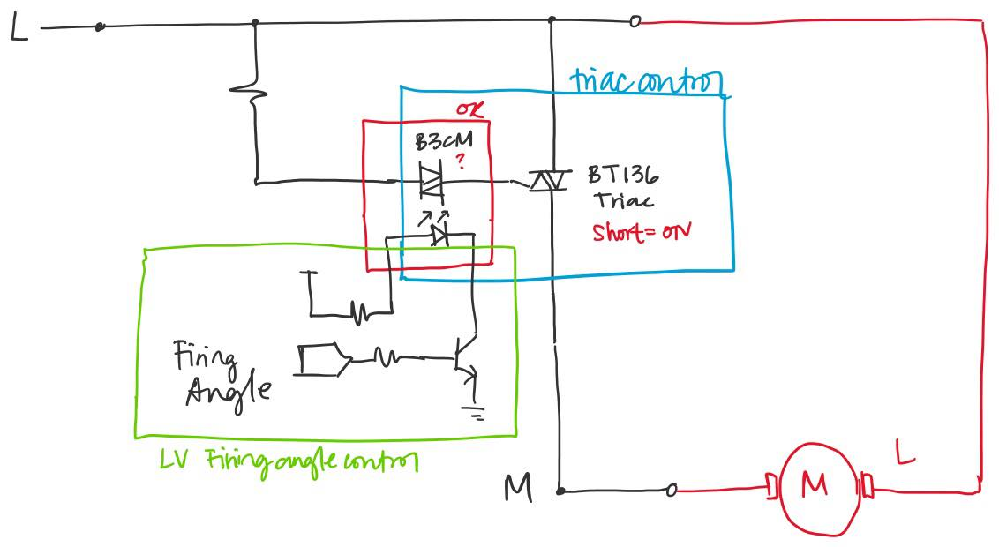
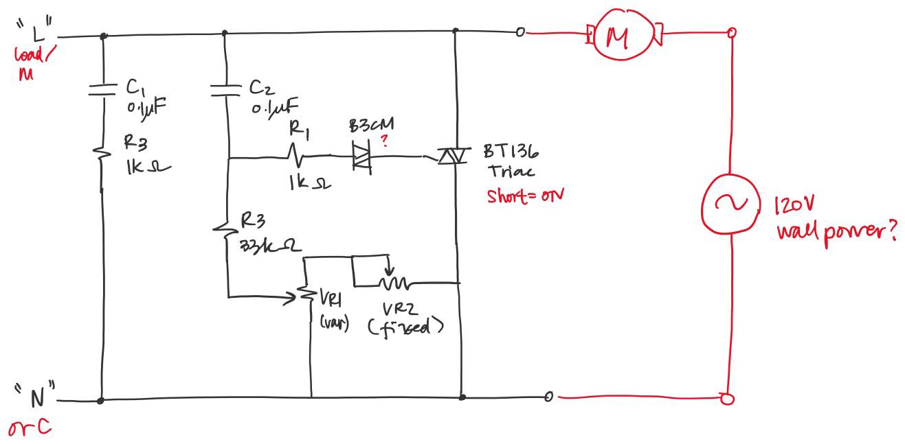
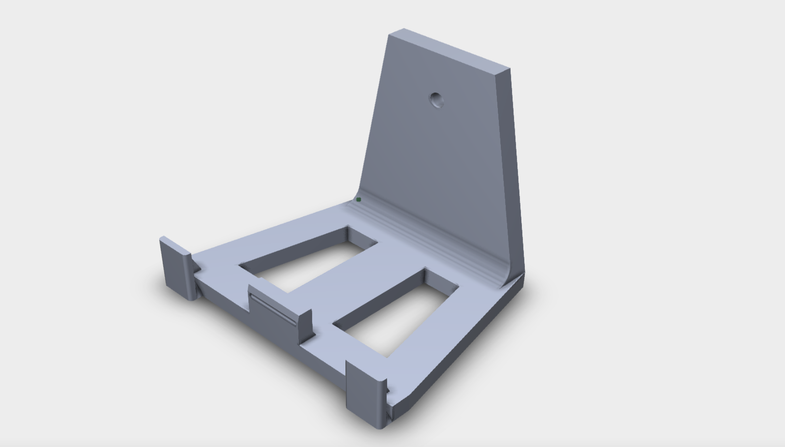

Highlights of the Week
Welcome back from Reading Week! Here are a few highlights from the past couple weeks.
On the electrical side, Yaning and Frank populated the custom PCB and performed some preliminary tests. From the tests, we discovered that we had made some wrong assumptions about how the motor in the sewing machine was wired. The first diagram below shows the circuitry that we have, and the second diagram shows the circuitry that we should have.
 On the mechanical side, Frank designed the adapter that interfaces between the embroidery hoop and the bracket attached to the top stage of the frame.

On the software side, Rachel and I added functionality to handle jump stitches, which are stitches that connect one embroidered section to another.
What’s Next?
Here’s what we plan to do this week:
- Finish off the electrical system and get CSA approval
- 3D print embroidery hoop adapter
- Test software that handles jump stitches
- Start symposium preparations (poster, presentation, demo)
Stay tuned for our next weekly post, and follow us on Twitter for the latest updates!
Ben